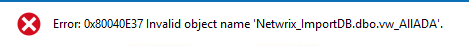
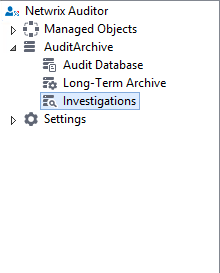
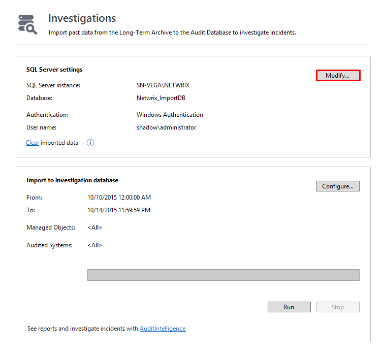
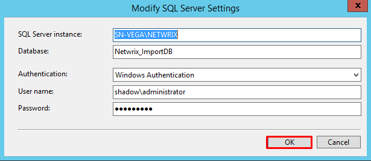
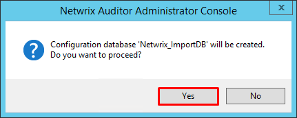
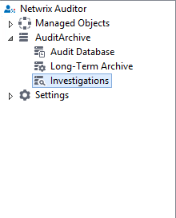
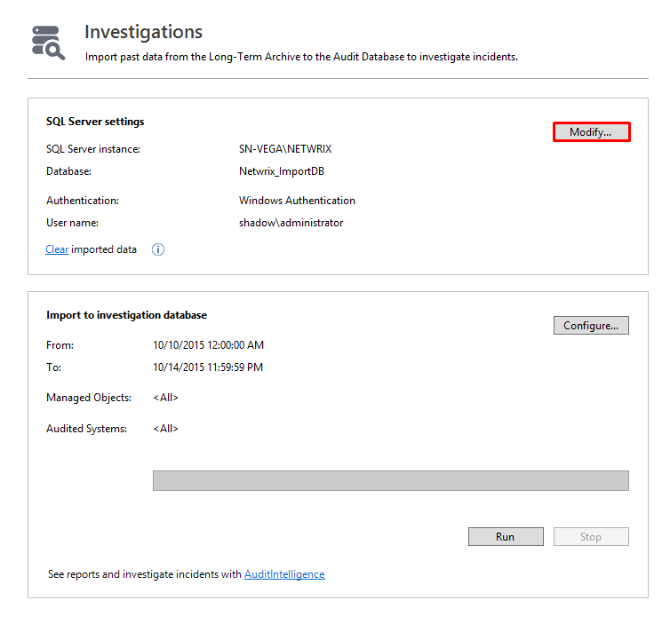
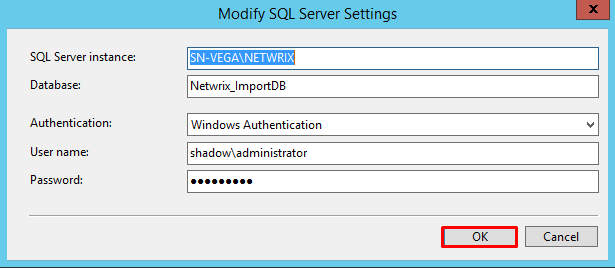
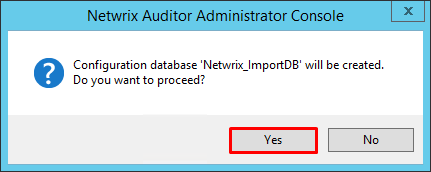

When using the Netwrix Auditor Client to run Searches the search fails with the following:

During install/upgrade to version 7.1 of Netwrix Auditor, this database view (Netwrix_ImportDB.dbo.vw_AllADA ) is supposed to be created. In the case where this error is encountered, the Netwrix_ImportDB database was not created. The search looks for this database but is not able to find it which halts the search.
To fix this issue the ImportDB should be created which can be accomplished with the following steps: 1) Open the Netwrix Auditor Administrator Console 2) Expand Audit Archive and then click Investigations  3) Click Modify on the Investigations screen in the right hand pane  4) On the Modify SQL Server Settings Screen that pops up click OK  5) On the next screen click OK to create the ImportDB  Note: Step #5 will not be successful if the account specified in the Netwrix Auditor SQL Server Settings (see screenshot above) does not have Create DB permissions in SQL. Please consult Microsoft documentation for instructions on how to give an account this permission for the version of Microsoft SQL that is being used.
During install/upgrade to version 7.1 of Netwrix Auditor, this database view (Netwrix_ImportDB.dbo.vw_AllADA ) is supposed to be created. In the case where this error is encountered, the Netwrix_ImportDB database was not created. The search looks for this database but is not able to find it which halts the search.
To fix this issue the ImportDB should be created which can be accomplished with the following steps: 1) Open the Netwrix Auditor Administrator Console 2) Expand Audit Archive and then click Investigations  3) Click Modify on the Investigations screen in the right hand pane  4) On the Modify SQL Server Settings Screen that pops up click OK  5) On the next screen click OK to create the ImportDB  Note: Step #5 will not be successful if the account specified in the Netwrix Auditor SQL Server Settings (see screenshot above) does not have Create DB permissions in SQL. Please consult Microsoft documentation for instructions on how to give an account this permission for the version of Microsoft SQL that is being used.